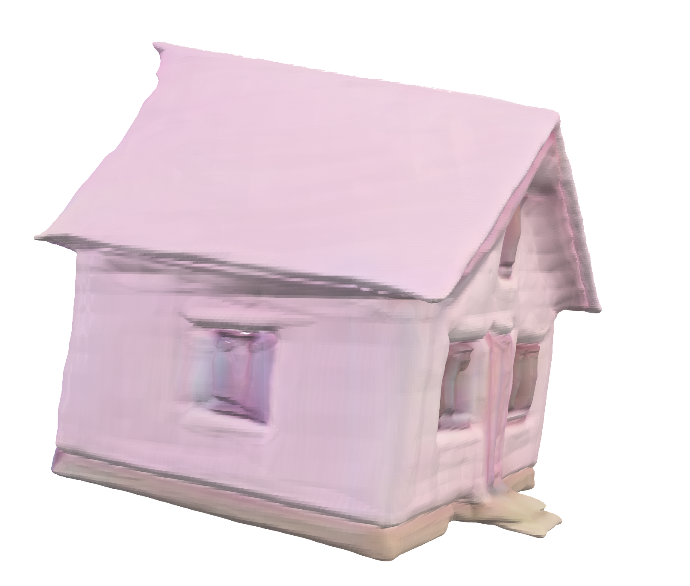
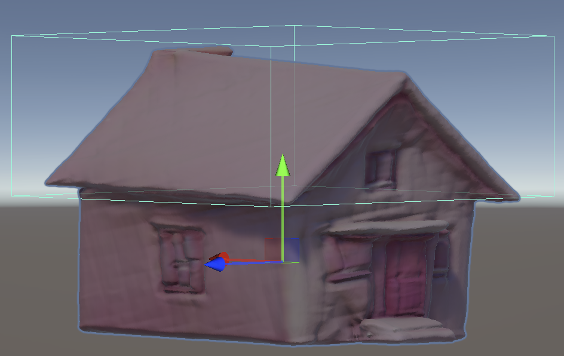
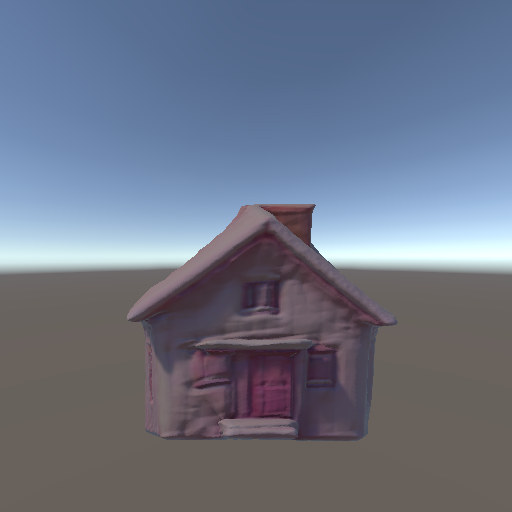
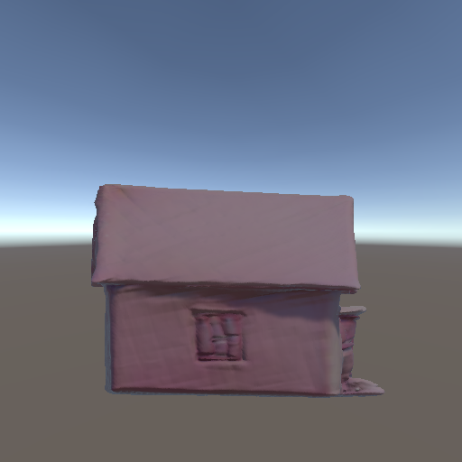
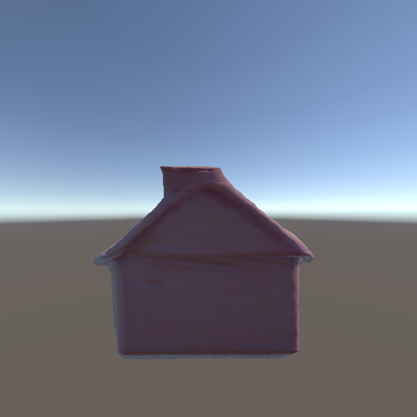
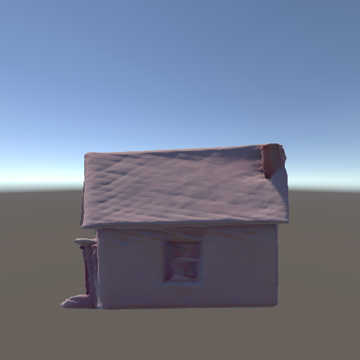
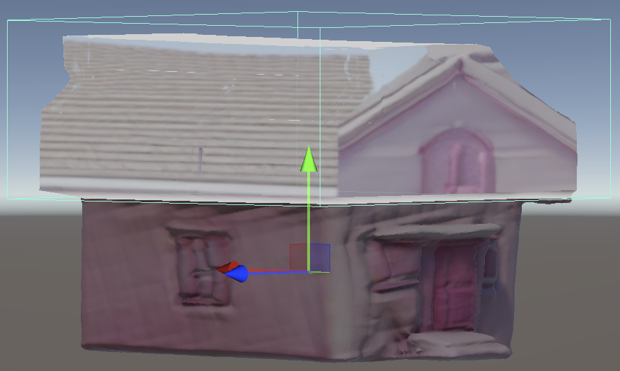

Meaning, not space
A relation is named, but distance, orientation and clearance remain unspecified. [1,2]
"Two market stalls around a well. Crates beside the left stall. Keep a clear route to the gate."
A relation is named, but distance, orientation and clearance remain unspecified. [1,2]
Primitives externalize scale, flow and composition before detail. [3,4]
Visible actions preserve agency and support iteration. [5,14–16,23,24]
Fast assets from text or images
Explicit structure can condition generation
One region can change while the rest remains
The layout is visible;
depth and volume are still chosen by the system.
The system can repair invalid output without exposing the intended geometry.
Proxy → generate → fit
Region → regenerate → preserve
Do proxies improve spatial fit and reduce translation effort?
Does the mask make local edits more predictable and preserve the rest of the scene?
Position
volume
rotation
“cute”
“pink house”
Linear depth
Depth-derived edge map
Ready in the scene
Positive · low-poly 3D model
Negative · scene · occlusion · wrong view
Depth + edge controlled
Isolated object image
Image → mesh
Upright correction
Fit to proxy volume
“photorealistic house, right-front view, real-estate photo, natural daylight”
“low poly 3D model”

Wall normals: smallest eigenvector of the scatter matrix
Find the minimum-area footprint
Rotate mesh children, then scale the root
Use non-uniform scaling
Fit with upright geometry





Fit to untouched geometry · hide the original inside the OBB · place the refined at the region
Edit Front · Left · Back · Right
Shared prompt, checkpoint + seed
Crop to projected OBB
Centre without distortion
Tagged views
Participants: experience in 3D or game design
Same creation task: preference between iteration speed and mesh fidelity.
Fast feedbackLower fidelity
Higher fidelitySlower · Linux
SEQ · task ease [19]
Paas · mental effort [20]
Targeted checks
spatial intent match · predictability
Logs
3D IoU / CD · time · attempts
SEQ · task ease [19]
Paas · mental effort [20]
Targeted checks
edit locality · scene preservation
Logs
inside success · outside change · seam validity
NASA-TLX · six scales, once [17,18]
UMUX-LITE · two items [21]
Blind output rating
spatial fit · visual quality · task fit
End of study
agency / ownership [29] · preference
If creative support is a primary outcome, use the full Creativity Support Index once per condition [22], not selected subscales.
proxy + capture
two lifters
clip + weld + validate
in progress
Fast
quality too low for refinement
Better quality
Linux runtime required
Procedural geometry for structured 3D assets.
A local edit updates parameters instead of reconstructing the asset.
/health preflight
text-only + lifters
logs + scorecards
3–4 participants
analyse + write
DeploymentLinux workstation or controlled remote backend?
Target scenesRequire spatial reasoning and feel natural to designers.
Augmenting Text Prompts with Spatial Proxy Controls in AI-Assisted 3D Scene Generation within Unity